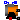
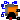
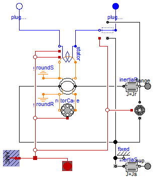
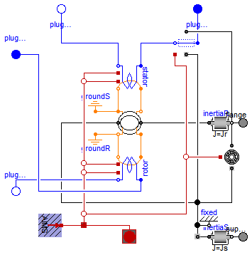

This package provides squirrel cage and slip ring induction machine models.
Extends from Modelica.Icons.VariantsPackage (Icon for package containing variants).
| Name | Description |
|---|---|
|  AIM_SquirrelCage | Asynchronous induction machine with squirrel cage |
|  AIM_SlipRing | Asynchronous induction machine with slip ring rotor |

Resistances and stray inductances of the machine refer to the stator phases. The symmetry of the stator and rotor is assumed. The machine models take the following loss effects into account:
Extends from Modelica.Magnetic.FundamentalWave.Interfaces.PartialBasicInductionMachine (Partial model for induction machine).
| Type | Name | Default | Description |
|---|---|---|---|
| Inertia | Jr | Rotor inertia [kg.m2] | |
| Boolean | useSupport | false | Enable / disable (=fixed stator) support |
| Inertia | Js | Stator inertia [kg.m2] | |
| Boolean | useThermalPort | false | Enable / disable (=fixed temperatures) thermal port |
| Integer | p | Number of pole pairs (Integer) | |
| Frequency | fsNominal | Nominal frequency [Hz] | |
| Real | effectiveStatorTurns | 1 | Effective number of stator turns |
| Operational temperatures | |||
| Temperature | TsOperational | Operational temperature of stator resistance [K] | |
| Temperature | TrOperational | Operational temperature of rotor resistance [K] | |
| Nominal resistances and inductances | |||
| Resistance | Rs.start | 0.03 | Stator resistance per phase at TRef [Ohm] |
| Temperature | TsRef | Reference temperature of stator resistance [K] | |
| LinearTemperatureCoefficient20 | alpha20s | Temperature coefficient of stator resistance at 20 degC [1/K] | |
| Inductance | Lssigma.start | 3*(1 - sqrt(1 - 0.0667))/(2*... | Stator stray inductance per phase [H] |
| Inductance | Lszero | Lssigma | Stator zero inductance per phase [H] |
| Inductance | Lm | Main field inductance [H] | |
| Inductance | Lrsigma | Rotor leakage inductance w.r.t. stator side [H] | |
| Resistance | Rr | Rotor resistance w.r.t. stator side [Ohm] | |
| Temperature | TrRef | Reference temperature of rotor resistance [K] | |
| LinearTemperatureCoefficient20 | alpha20r | Temperature coefficient of rotor resistance at 20 degC [1/K] | |
| Losses | |||
| FrictionParameters | frictionParameters | Friction losses | |
| CoreParameters | statorCoreParameters | Stator core losses | |
| StrayLoadParameters | strayLoadParameters | Stray load losses | |
| Type | Name | Description |
|---|---|---|
| Flange_a | flange | Shaft |
| Flange_a | support | Support at which the reaction torque is acting |
| PositivePlug | plug_sp | Positive plug of stator |
| NegativePlug | plug_sn | Negative plug of stator |
model AIM_SquirrelCage
"Asynchronous induction machine with squirrel cage"
extends Modelica.Magnetic.FundamentalWave.Interfaces.PartialBasicInductionMachine
(
is(start=zeros(m)),
Rs(start=0.03),
Lssigma(start=3*(1 - sqrt(1 - 0.0667))/(2*pi*fsNominal)),
final L0(d=2.0*Lm/3.0/effectiveStatorTurns^2, q=2.0*Lm/3.0/effectiveStatorTurns^2),
redeclare final Modelica.Electrical.Machines.Thermal.AsynchronousInductionMachines.ThermalAmbientAIMC
thermalAmbient(final Tr=TrOperational),
redeclare final Modelica.Electrical.Machines.Interfaces.InductionMachines.ThermalPortAIMC
thermalPort,
redeclare final Modelica.Electrical.Machines.Interfaces.InductionMachines.ThermalPortAIMC
internalThermalPort,
redeclare final Modelica.Electrical.Machines.Interfaces.InductionMachines.PowerBalanceAIMC
powerBalance(final lossPowerRotorWinding = -rotorCage.heatPortWinding.Q_flow,
final lossPowerRotorCore = 0));
parameter Modelica.SIunits.Inductance Lm(start=3*sqrt(1 - 0.0667)/(2*pi*fsNominal))
"Main field inductance";
parameter Modelica.SIunits.Inductance Lrsigma(start=3*(1 - sqrt(1 - 0.0667))/(2*pi*fsNominal))
"Rotor leakage inductance w.r.t. stator side";
parameter Modelica.SIunits.Resistance Rr(start=0.04)
"Rotor resistance w.r.t. stator side";
parameter Modelica.SIunits.Temperature TrRef(start=293.15)
"Reference temperature of rotor resistance";
parameter Modelica.Electrical.Machines.Thermal.LinearTemperatureCoefficient20
alpha20r(start=0) "Temperature coefficient of rotor resistance at 20 degC";
parameter Modelica.SIunits.Temperature TrOperational(start=293.15)
"Operational temperature of rotor resistance";
Modelica.Magnetic.FundamentalWave.BasicMachines.Components.SymmetricMultiPhaseCageWinding
rotorCage(
final Lsigma=Lrsigma,
final m=m,
final effectiveTurns=effectiveStatorTurns,
final useHeatPort=true,
final RRef=Rr,
final TRef=TrRef,
final TOperational=TrRef,
final alpha20=alpha20r)
"Symmetric rotor cage winding including resistances and stray inductances";
equation
connect(airGap.port_rn, rotorCage.port_n);
connect(airGap.port_rp, rotorCage.port_p);
connect(rotorCage.heatPortWinding, internalThermalPort.heatPortRotorWinding);
end AIM_SquirrelCage;

Resistances and stray inductances of the machine always refer to either stator or rotor phases. The symmetry of the stator and rotor is assumed. The machine models take the following loss effects into account:
Extends from Modelica.Magnetic.FundamentalWave.Interfaces.PartialBasicInductionMachine (Partial model for induction machine).
| Type | Name | Default | Description |
|---|---|---|---|
| Inertia | Jr | Rotor inertia [kg.m2] | |
| Boolean | useSupport | false | Enable / disable (=fixed stator) support |
| Inertia | Js | Stator inertia [kg.m2] | |
| Boolean | useThermalPort | false | Enable / disable (=fixed temperatures) thermal port |
| Integer | p | Number of pole pairs (Integer) | |
| Frequency | fsNominal | Nominal frequency [Hz] | |
| Real | effectiveStatorTurns | 1 | Effective number of stator turns |
| Boolean | useTurnsRatio | Use TurnsRatio or calculate from locked-rotor voltage? | |
| Real | TurnsRatio | Effective number of stator turns / effective number of rotor turns | |
| Voltage | VsNominal | Nominal stator voltage per phase [V] | |
| Voltage | VrLockedRotor | Locked rotor voltage per phase [V] | |
| Operational temperatures | |||
| Temperature | TsOperational | Operational temperature of stator resistance [K] | |
| Temperature | TrOperational | Operational temperature of rotor resistance [K] | |
| Nominal resistances and inductances | |||
| Resistance | Rs.start | 0.03 | Stator resistance per phase at TRef [Ohm] |
| Temperature | TsRef | Reference temperature of stator resistance [K] | |
| LinearTemperatureCoefficient20 | alpha20s | Temperature coefficient of stator resistance at 20 degC [1/K] | |
| Inductance | Lssigma.start | 3*(1 - sqrt(1 - 0.0667))/(2*... | Stator stray inductance per phase [H] |
| Inductance | Lszero | Lssigma | Stator zero inductance per phase [H] |
| Inductance | Lm | Main field inductance [H] | |
| Inductance | Lrsigma | Rotor leakage inductance w.r.t. stator side [H] | |
| Inductance | Lrzero | Lrsigma | Rotor zero inductance w.r.t. stator side [H] |
| Resistance | Rr | Rotor resistance w.r.t. stator side [Ohm] | |
| Temperature | TrRef | Reference temperature of rotor resistance [K] | |
| LinearTemperatureCoefficient20 | alpha20r | Temperature coefficient of rotor resistance at 20 degC [1/K] | |
| Losses | |||
| FrictionParameters | frictionParameters | Friction losses | |
| CoreParameters | statorCoreParameters | Stator core losses | |
| StrayLoadParameters | strayLoadParameters | Stray load losses | |
| CoreParameters | rotorCoreParameters | Rotor core losses | |
| Type | Name | Description |
|---|---|---|
| Flange_a | flange | Shaft |
| Flange_a | support | Support at which the reaction torque is acting |
| PositivePlug | plug_sp | Positive plug of stator |
| NegativePlug | plug_sn | Negative plug of stator |
| NegativePlug | plug_rn | Negative plug of rotor |
| PositivePlug | plug_rp | Positive plug of rotor |
model AIM_SlipRing
"Asynchronous induction machine with slip ring rotor"
extends Modelica.Magnetic.FundamentalWave.Interfaces.PartialBasicInductionMachine
(
is(start=zeros(m)),
Rs(start=0.03),
Lssigma(start=3*(1 - sqrt(1 - 0.0667))/(2*pi*fsNominal)),
final L0(d=2.0*Lm/3.0/effectiveStatorTurns^2, q=2.0*Lm/3.0/effectiveStatorTurns^2),
redeclare final Modelica.Electrical.Machines.Thermal.AsynchronousInductionMachines.ThermalAmbientAIMS
thermalAmbient(final Tr=TrOperational),
redeclare final Modelica.Electrical.Machines.Interfaces.InductionMachines.ThermalPortAIMS
thermalPort,
redeclare final Modelica.Electrical.Machines.Interfaces.InductionMachines.ThermalPortAIMS
internalThermalPort,
redeclare final Modelica.Electrical.Machines.Interfaces.InductionMachines.PowerBalanceAIMS
powerBalance(final lossPowerRotorWinding = -sum(rotor.heatPortWinding.Q_flow),
final lossPowerRotorCore = -rotor.heatPortCore.Q_flow,
final lossPowerBrush = 0,
final powerRotor = Modelica.Electrical.Machines.SpacePhasors.Functions.activePower(vr, ir)));
Modelica.Electrical.MultiPhase.Interfaces.NegativePlug plug_rn(final m=m)
"Negative plug of rotor";
Modelica.Electrical.MultiPhase.Interfaces.PositivePlug plug_rp(final m=m)
"Positive plug of rotor";
parameter Modelica.SIunits.Inductance Lm(start=3*sqrt(1 - 0.0667)/(2*pi*fsNominal))
"Main field inductance";
parameter Modelica.SIunits.Inductance Lrsigma(start = 3*(1 - sqrt(1 - 0.0667))/(2*pi*fsNominal))
"Rotor leakage inductance w.r.t. stator side";
parameter Modelica.SIunits.Inductance Lrzero=Lrsigma
"Rotor zero inductance w.r.t. stator side";
parameter Modelica.SIunits.Resistance Rr(start = 0.04)
"Rotor resistance w.r.t. stator side";
parameter Modelica.SIunits.Temperature TrRef(start=293.15)
"Reference temperature of rotor resistance";
parameter Modelica.Electrical.Machines.Thermal.LinearTemperatureCoefficient20
alpha20r(start=0) "Temperature coefficient of rotor resistance at 20 degC";
parameter Modelica.SIunits.Temperature TrOperational(start=293.15)
"Operational temperature of rotor resistance";
parameter Boolean useTurnsRatio(start=true)
"Use TurnsRatio or calculate from locked-rotor voltage?";
parameter Real TurnsRatio(final min=Modelica.Constants.small, start=1)
"Effective number of stator turns / effective number of rotor turns";
parameter Modelica.SIunits.Voltage VsNominal(start=100)
"Nominal stator voltage per phase";
parameter Modelica.SIunits.Voltage VrLockedRotor(
start=100*(2*pi*fsNominal*Lm)/sqrt(Rs^2+(2*pi*fsNominal*(Lm+Lssigma))^2))
"Locked rotor voltage per phase";
parameter Modelica.Electrical.Machines.Losses.CoreParameters
rotorCoreParameters(
final m=3,
PRef=0,
VRef(start=1)=1,
wRef(start=1)=1) "Rotor core losses";
output Modelica.SIunits.Voltage vr[m] = plug_rp.pin.v - plug_rn.pin.v
"Rotor instantaneous voltages";
output Modelica.SIunits.Current ir[m] = plug_rp.pin.i
"Rotor instantaneous currents";
protected
final parameter Real internalTurnsRatio=if useTurnsRatio then TurnsRatio else
VsNominal/VrLockedRotor*(2*pi*fsNominal*Lm)/sqrt(Rs^2+(2*pi*fsNominal*(Lm+Lssigma))^2);
public
Components.SymmetricMultiPhaseWinding rotor(
final m=m,
final Lsigma=Lrsigma,
final effectiveTurns=effectiveStatorTurns/internalTurnsRatio,
final useHeatPort=true,
final RRef=Rr,
final TRef=TrRef,
final TOperational=TrOperational,
final Lzero=Lrsigma,
final alpha20=alpha20r,
final GcRef=rotorCoreParameters.GcRef)
"Symmetric rotor winding including resistances, zero and stray inductances and zero core losses";
/* previously used: state selection, now commented
FundamentalWave.Interfaces.StateSelector stateSelectorR(
final m=m,
final xi=ir,
final gamma=0) "State selection of rotor currents"
annotation (Placement(transformation(extent={{-10,-10},{10,10}},
rotation=90,
origin={-90,0})));
*/
equation
connect(rotor.plug_n, plug_rn);
connect(airGap.port_rn, rotor.port_n);
connect(airGap.port_rp, rotor.port_p);
connect(rotor.heatPortCore, internalThermalPort.heatPortRotorCore);
connect(rotor.heatPortWinding, internalThermalPort.heatPortRotorWinding);
connect(plug_rp, rotor.plug_p);
end AIM_SlipRing;